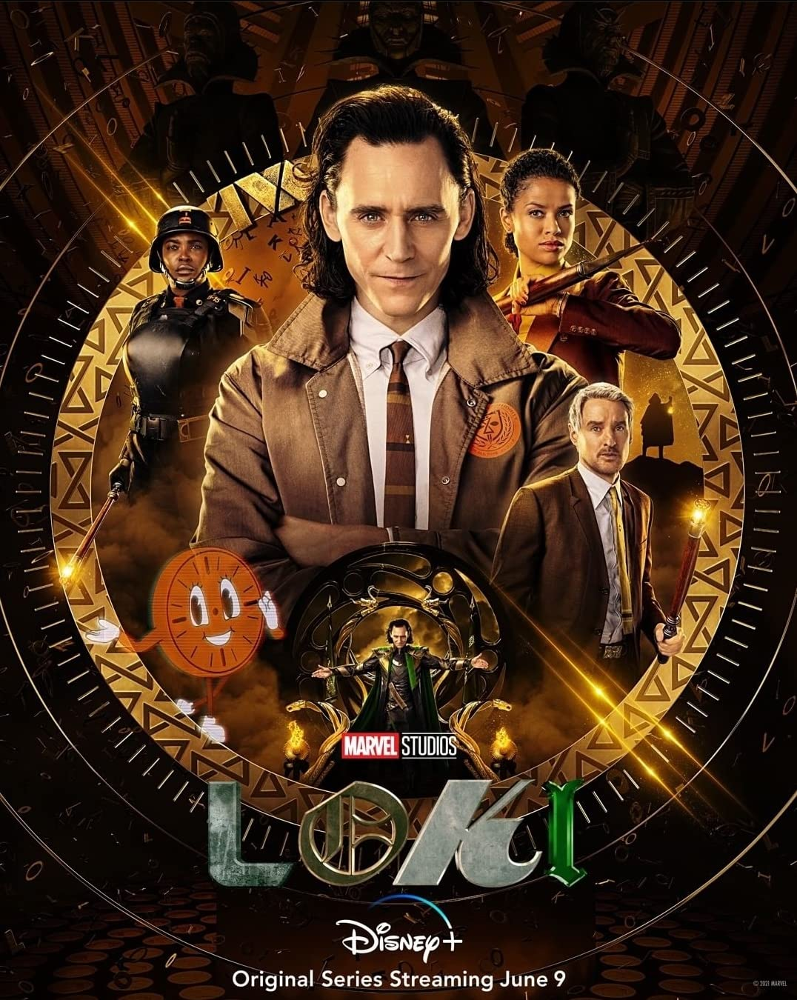

Action Adventure Fantasy
After stealing the Tesseract during the events of Avengers: Endgame (2019), an alternate version of Loki is brought to the mysterious Time Variance Authority (TVA), a bureaucratic organization that exists outside of time and space and monitors the timeline. They give Loki a choice: face being erased from existence due to being a "time variant", or help fix the timeline and stop a greater threat. Loki ends up trapped in his own crime thriller, traveling through time.
| Director: | Kate Herron |
| Creator: | Michael Waldron (created for television by) |
| Stars: | |